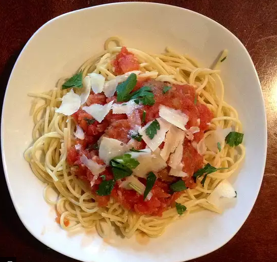

Home Pesto Lasagna Macaroni and Cheese
Spaghetti

Spaghetti is a family favorite
Ingredients
- ½ pound Italian sausage
- 6.5 oz tomato sauce
- 14.5 oz diced tomatoes
- 2 bay leaves
- 1 teaspoon Italian seasoning
- ½ teaspoon garlic powder
- 1 teaspoon dried basil
- 1 teaspoon dried oregano
- salt and pepper to taste
- 8 oz package of spaghetti
Directions
- In a large skillet, brown sausage over medium heat; drain and set aside
- In a large saucepan over medium heat, combine tomato sauce, diced tomatoes, bay leaves, Italian seasoning, garlic powder, basil, oregano, salt, pepper, and Italian sausage; mix well.
- Simmer over medium-low heat for at least one hour; it is best if simmered all day.
- Bring a large pot of lightly salted water to a boil. Add pasta and cook for 8 to 10 minutes or until al dente; drain.
- Mix sauce with hot pasta; serve.